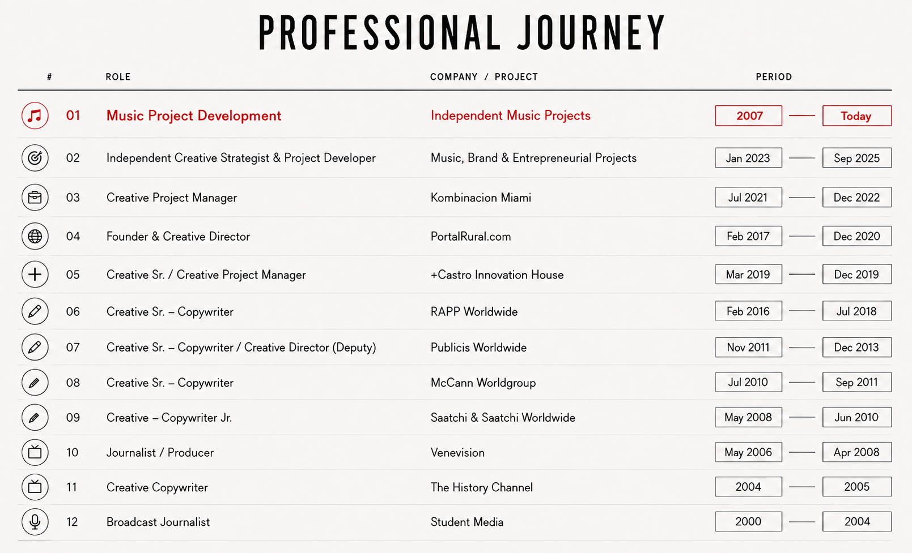

Music Lover.
Strategy Fan.
Instinct
Believer.
Music has been part of my life for as long as I can remember. I have released two albums in Latin America and I am currently developing a new music project. Across my career, I have built projects where I was not only at the creative core, but also responsible for turning ideas into narratives, strategies and audiences — often achieving significant results with limited resources.
Career & Portfolio

Journalism
Stories, interviews, editorial projects and journalistic work focused on people, culture and contemporary ideas.
Creative Direction & Copywriting
Creative concepts, campaigns, brand narratives and communication strategies developed across advertising, technology and media.
Entrepreneurship & Business Development
Building brands, testing business models and transforming ideas into products, experiences and scalable projects.
Music & Artist Development
Independent music projects spanning songwriting, concept development, identity, production, release strategy and self-promotion.
Professional Education
Universidad Bicentenaria de Aragua
Bachelor's Degree in Journalism. Specialization in communication and crisis management.
Brother Ad School
Creative Advertising & Creative Direction Program.
IAE Business School — Universidad Austral
NAVES: Entrepreneurship & Business Development Program.
Government of the City of Buenos Aires
Vos Lo Hacés: Entrepreneurship & Business Development Program.
Languages & Additional Training
German — Integration Course & B1
German language and official integration training.
Professional German — B2
Professional German language training.
About
I am a journalist, creative director, entrepreneur and independent music project developer. My career has moved across storytelling, advertising, strategy, business development and music — different disciplines connected by the same instinct: identifying potential, developing ideas and finding the audience that can make them grow.